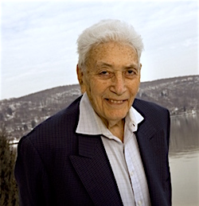
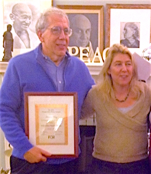

Friends,
The Fellowship of Reconciliation is humbled and honored to announce an extraordinarily generous gift from the Kurz Family Foundation to be a Legacy Sponsor of FOR-USA's upcoming Centennial Celebrations. The gift is made in memory of Herb Kurz, a recipient of FOR's 2014 Nyack Area Peace Award, who lived his personal and professional life as a model citizen, caring about and working toward justice and equality for all.
|

Herb Kurz, 1920-2014.

Leonard Kurz accepting the 2014 Nyack Area Peace Award on behalf of his father Herb, with FOR Executive Director Rev. Kristin Stoneking.
|
Herb Kurz, philanthropist and founder of Presidential Life Insurance Company in Nyack, NY, was a progressive supporter of civil-liberties activism. He practiced affirmative-action hiring of women and people of color, and had socially responsible business practices that were ahead of their time. "At Presidential, I place diversity in the work force as a high priority," said Mr. Kurz, "I've been holding onto a working-class consciousness in the business world."
To learn more about the remarkable life of Herb Kurz, please read his obituary in The New York Times.
Joining the Kurz Family Foundation in support of our Centennial Celebrations are the Riverside Church, Union Theological Seminary, Lee Thomas the President and Founder of Universal Woods, Inc., Martha and Peter DiGiovanni, June Wink, Bogle Wineries, Pension Parameters Financial Services, and Cristy Jensen and Maynard Skinner.
We are enormously grateful to all who are offering their hearts and hands as benefactors of our centennial events. This is a highlight moment for members, affiliates, and for the movement on the whole as we celebrate the significant impact we had on the last century and launch FOR's continuing efforts for peace and social justice into the future.
There are all sort of ways to become a centennial sponsor to help launch FOR's work into the next century.
For instance, you can donate a complimentary ticket to the Gala Dinner for a young activist, or provide for a young activist to attend the national conference in Seabeck, Washington, next July. For more information about sponsorship opportunities, please contact me at 845-358-4601 x29.
In peace and gratitude,
Jonette O'Kelley Miller
Director of Development
Fellowship of Reconciliation |